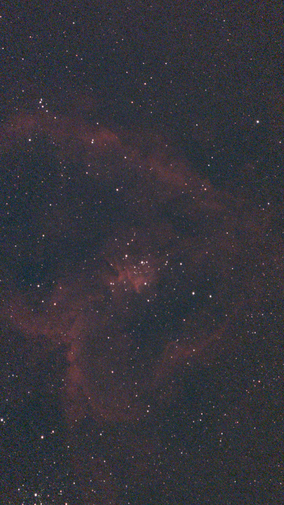
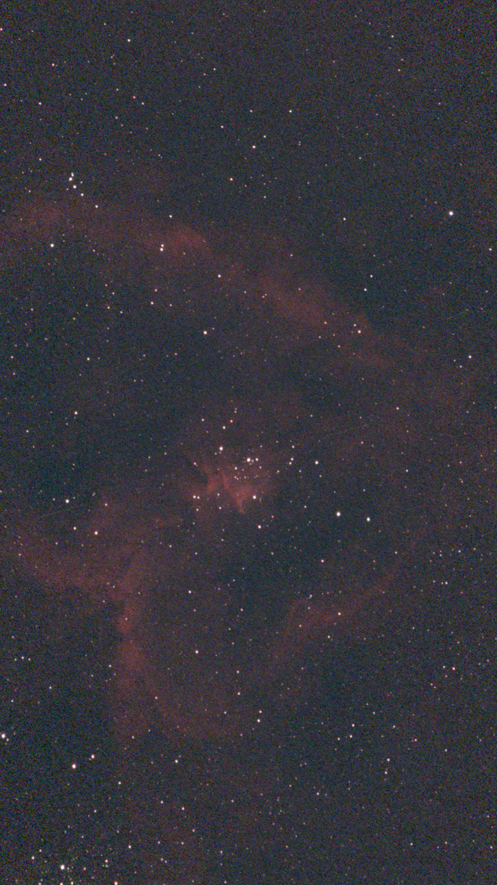

Physics-first gradient removal for astrophotography, on macOS and iOS. A scattering model takes out the skyglow; a stiff low-order surface finishes; faint nebulosity survives.
Download for macOSBackground extraction tools treat your image as an isolated numerical grid: place enough sample boxes, fit a high-order surface, and hope it doesn’t swallow your nebulosity. FITS n’ Finish starts from the physics instead. A physically motivated atmospheric-scattering model — driven by where the telescope pointed, when, and through what air — predicts the shape of the steep, non-linear skyglow baseline; its amplitude is fitted to your frame and subtracted first. What remains is gentle enough that a 1st or 2nd-degree surface finishes the job — and a surface that stiff has almost no freedom to follow faint extended structure. Integrated flux nebula and outer galaxy halos survive, and you can inspect exactly what each stage subtracted.


WCS plate solutions, RA/Dec cards, capture time and optics geometry set altitude, field of view and field rotation automatically on open.
Rayleigh’s λ−4 law runs per color channel — the blue sky gradient is modeled steeper than the red, because it is.
Built-in solar and lunar ephemerides add a Krisciunas–Schaefer scattering term for the moon’s position and phase at capture time.
A directional Garstang glow term points at your nearest city, saved with per-site presets.
The prior is averaged across the integration as the target and moon move.
Bright-star masking, halo dilation and sigma-clipped refits keep saturated stars from tilting the surface.
Color cubes, multi-HDU files and every fpack tile compression: RICE, GZIP, HCOMPRESS, PLIO, dithered quantization. WCS survives export.
Toggle between the original, the physical model, the fitted surface and the result — see the actual surfaces being subtracted.
The whole per-pixel pipeline runs as Metal compute kernels, bit-identical to the CPU reference path.
Updates arrive in-app with release notes, signed and notarized.
Use it before stretching, alongside Siril or PixInsight — open a stack
(FITS or XISF), remove the gradient, export a 16-bit FITS with the WCS
intact, and carry on. Rig-and-site presets import and export as plain
JSON, a headless fnfin CLI scripts the same engine, and
updates arrive in-app with release notes.
Workflow guide for Siril and PixInsight users.
Source on GitHub · Releases · Changelog · The math · Update feed